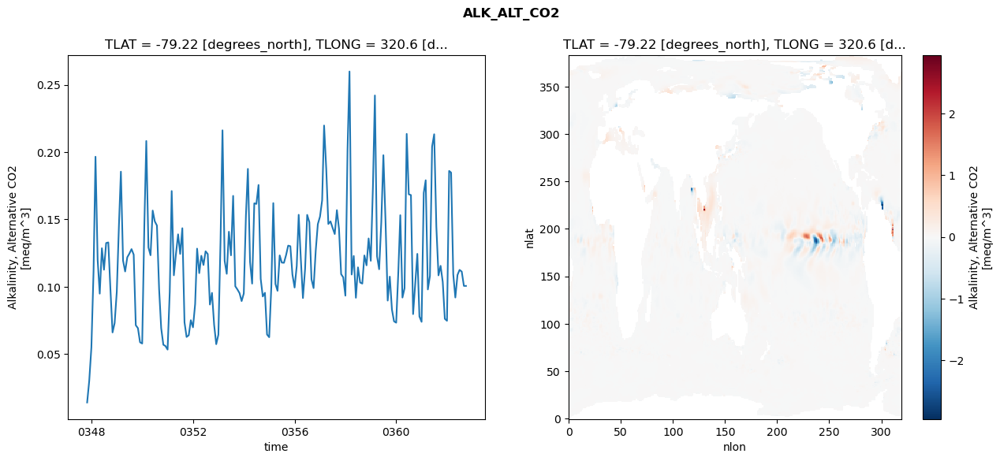
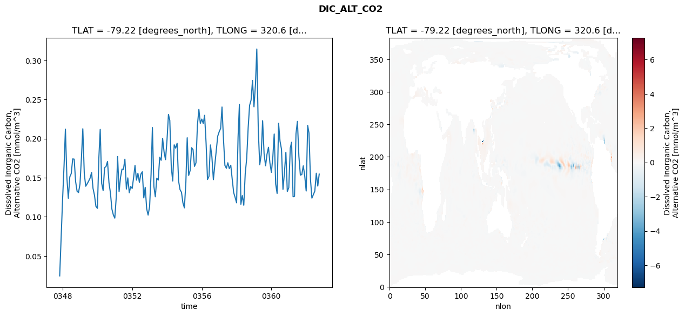
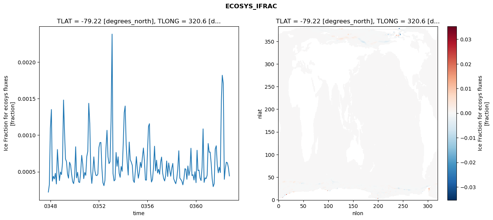
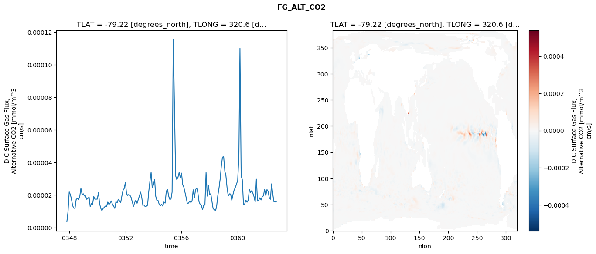

glb-dor_North_Atlantic_basin_012_1999-10-01_00051#
Simulation details#
Case: smyle.cdr-atlas-v0.glb-dor_North_Atlantic_basin_012_1999-10-01_00051.001
Basin: North_Atlantic_basin
Polygon: 12.0
Start date: 1999-10
Show code cell source Hide code cell source
import xarray as xr
import matplotlib.pyplot as plt
Show code cell source Hide code cell source
zarr_store = "/path/to/zarr/store"
# Parameters
zarr_store = "/global/cfs/projectdirs/m4746/Projects/Ocean-CDR-Atlas-v0/data/validation/smyle.cdr-atlas-v0.glb-dor_North_Atlantic_basin_012_1999-10-01_00051.001.validation.zarr"
Show code cell source Hide code cell source
%%time
ds_o = xr.open_zarr(zarr_store).compute()
ds_o
CPU times: user 655 ms, sys: 499 ms, total: 1.15 s
Wall time: 1.48 s
<xarray.Dataset> Size: 2MB
Dimensions: (nlat: 384, nlon: 320, time: 180)
Coordinates:
TLAT float64 8B -79.22
TLONG float64 8B 320.6
ULAT float64 8B -78.95
ULONG float64 8B 321.1
* time (time) object 1kB 0347-11-01 00:00:00 ... 0362-10-01 0...
z_t float32 4B 500.0
Dimensions without coordinates: nlat, nlon
Data variables:
ALK_ALT_CO2_diff (nlat, nlon) float32 492kB nan nan nan ... nan nan nan
ALK_ALT_CO2_rmse (time) float64 1kB 0.01408 0.03017 ... 0.1006 0.1006
DIC_ALT_CO2_diff (nlat, nlon) float32 492kB nan nan nan ... nan nan nan
DIC_ALT_CO2_rmse (time) float64 1kB 0.02456 0.07385 ... 0.1394 0.1547
ECOSYS_IFRAC_diff (nlat, nlon) float32 492kB nan nan nan ... nan nan nan
ECOSYS_IFRAC_rmse (time) float64 1kB 0.000222 0.0003219 ... 0.0004428
FG_ALT_CO2_diff (nlat, nlon) float32 492kB nan nan nan ... nan nan nan
FG_ALT_CO2_rmse (time) float64 1kB 3.483e-06 9.635e-06 ... 1.583e-05xarray.Dataset
- nlat: 384
- nlon: 320
- time: 180
- TLAT()float64-79.22
- long_name :
- array of t-grid latitudes
- units :
- degrees_north
array(-79.22052261)
- TLONG()float64320.6
- long_name :
- array of t-grid longitudes
- units :
- degrees_east
array(320.56250892)
- ULAT()float64-78.95
- long_name :
- array of u-grid latitudes
- units :
- degrees_north
array(-78.95289509)
- ULONG()float64321.1
- long_name :
- array of u-grid longitudes
- units :
- degrees_east
array(321.12500894)
- time(time)object0347-11-01 00:00:00 ... 0362-10-...
- bounds :
- time_bound
- long_name :
- time
array([cftime.DatetimeNoLeap(347, 11, 1, 0, 0, 0, 0, has_year_zero=True), cftime.DatetimeNoLeap(347, 12, 1, 0, 0, 0, 0, has_year_zero=True), cftime.DatetimeNoLeap(348, 1, 1, 0, 0, 0, 0, has_year_zero=True), cftime.DatetimeNoLeap(348, 2, 1, 0, 0, 0, 0, has_year_zero=True), cftime.DatetimeNoLeap(348, 3, 1, 0, 0, 0, 0, has_year_zero=True), cftime.DatetimeNoLeap(348, 4, 1, 0, 0, 0, 0, has_year_zero=True), cftime.DatetimeNoLeap(348, 5, 1, 0, 0, 0, 0, has_year_zero=True), cftime.DatetimeNoLeap(348, 6, 1, 0, 0, 0, 0, has_year_zero=True), cftime.DatetimeNoLeap(348, 7, 1, 0, 0, 0, 0, has_year_zero=True), cftime.DatetimeNoLeap(348, 8, 1, 0, 0, 0, 0, has_year_zero=True), cftime.DatetimeNoLeap(348, 9, 1, 0, 0, 0, 0, has_year_zero=True), cftime.DatetimeNoLeap(348, 10, 1, 0, 0, 0, 0, has_year_zero=True), cftime.DatetimeNoLeap(348, 11, 1, 0, 0, 0, 0, has_year_zero=True), cftime.DatetimeNoLeap(348, 12, 1, 0, 0, 0, 0, has_year_zero=True), cftime.DatetimeNoLeap(349, 1, 1, 0, 0, 0, 0, has_year_zero=True), cftime.DatetimeNoLeap(349, 2, 1, 0, 0, 0, 0, has_year_zero=True), cftime.DatetimeNoLeap(349, 3, 1, 0, 0, 0, 0, has_year_zero=True), cftime.DatetimeNoLeap(349, 4, 1, 0, 0, 0, 0, has_year_zero=True), cftime.DatetimeNoLeap(349, 5, 1, 0, 0, 0, 0, has_year_zero=True), cftime.DatetimeNoLeap(349, 6, 1, 0, 0, 0, 0, has_year_zero=True), cftime.DatetimeNoLeap(349, 7, 1, 0, 0, 0, 0, has_year_zero=True), cftime.DatetimeNoLeap(349, 8, 1, 0, 0, 0, 0, has_year_zero=True), cftime.DatetimeNoLeap(349, 9, 1, 0, 0, 0, 0, has_year_zero=True), cftime.DatetimeNoLeap(349, 10, 1, 0, 0, 0, 0, has_year_zero=True), cftime.DatetimeNoLeap(349, 11, 1, 0, 0, 0, 0, has_year_zero=True), cftime.DatetimeNoLeap(349, 12, 1, 0, 0, 0, 0, has_year_zero=True), cftime.DatetimeNoLeap(350, 1, 1, 0, 0, 0, 0, has_year_zero=True), cftime.DatetimeNoLeap(350, 2, 1, 0, 0, 0, 0, has_year_zero=True), cftime.DatetimeNoLeap(350, 3, 1, 0, 0, 0, 0, has_year_zero=True), cftime.DatetimeNoLeap(350, 4, 1, 0, 0, 0, 0, has_year_zero=True), cftime.DatetimeNoLeap(350, 5, 1, 0, 0, 0, 0, has_year_zero=True), cftime.DatetimeNoLeap(350, 6, 1, 0, 0, 0, 0, has_year_zero=True), cftime.DatetimeNoLeap(350, 7, 1, 0, 0, 0, 0, has_year_zero=True), cftime.DatetimeNoLeap(350, 8, 1, 0, 0, 0, 0, has_year_zero=True), cftime.DatetimeNoLeap(350, 9, 1, 0, 0, 0, 0, has_year_zero=True), cftime.DatetimeNoLeap(350, 10, 1, 0, 0, 0, 0, has_year_zero=True), cftime.DatetimeNoLeap(350, 11, 1, 0, 0, 0, 0, has_year_zero=True), cftime.DatetimeNoLeap(350, 12, 1, 0, 0, 0, 0, has_year_zero=True), cftime.DatetimeNoLeap(351, 1, 1, 0, 0, 0, 0, has_year_zero=True), cftime.DatetimeNoLeap(351, 2, 1, 0, 0, 0, 0, has_year_zero=True), cftime.DatetimeNoLeap(351, 3, 1, 0, 0, 0, 0, has_year_zero=True), cftime.DatetimeNoLeap(351, 4, 1, 0, 0, 0, 0, has_year_zero=True), cftime.DatetimeNoLeap(351, 5, 1, 0, 0, 0, 0, has_year_zero=True), cftime.DatetimeNoLeap(351, 6, 1, 0, 0, 0, 0, has_year_zero=True), cftime.DatetimeNoLeap(351, 7, 1, 0, 0, 0, 0, has_year_zero=True), cftime.DatetimeNoLeap(351, 8, 1, 0, 0, 0, 0, has_year_zero=True), cftime.DatetimeNoLeap(351, 9, 1, 0, 0, 0, 0, has_year_zero=True), cftime.DatetimeNoLeap(351, 10, 1, 0, 0, 0, 0, has_year_zero=True), cftime.DatetimeNoLeap(351, 11, 1, 0, 0, 0, 0, has_year_zero=True), cftime.DatetimeNoLeap(351, 12, 1, 0, 0, 0, 0, has_year_zero=True), cftime.DatetimeNoLeap(352, 1, 1, 0, 0, 0, 0, has_year_zero=True), cftime.DatetimeNoLeap(352, 2, 1, 0, 0, 0, 0, has_year_zero=True), cftime.DatetimeNoLeap(352, 3, 1, 0, 0, 0, 0, has_year_zero=True), cftime.DatetimeNoLeap(352, 4, 1, 0, 0, 0, 0, has_year_zero=True), cftime.DatetimeNoLeap(352, 5, 1, 0, 0, 0, 0, has_year_zero=True), cftime.DatetimeNoLeap(352, 6, 1, 0, 0, 0, 0, has_year_zero=True), cftime.DatetimeNoLeap(352, 7, 1, 0, 0, 0, 0, has_year_zero=True), cftime.DatetimeNoLeap(352, 8, 1, 0, 0, 0, 0, has_year_zero=True), cftime.DatetimeNoLeap(352, 9, 1, 0, 0, 0, 0, has_year_zero=True), cftime.DatetimeNoLeap(352, 10, 1, 0, 0, 0, 0, has_year_zero=True), cftime.DatetimeNoLeap(352, 11, 1, 0, 0, 0, 0, has_year_zero=True), cftime.DatetimeNoLeap(352, 12, 1, 0, 0, 0, 0, has_year_zero=True), cftime.DatetimeNoLeap(353, 1, 1, 0, 0, 0, 0, has_year_zero=True), cftime.DatetimeNoLeap(353, 2, 1, 0, 0, 0, 0, has_year_zero=True), cftime.DatetimeNoLeap(353, 3, 1, 0, 0, 0, 0, has_year_zero=True), cftime.DatetimeNoLeap(353, 4, 1, 0, 0, 0, 0, has_year_zero=True), cftime.DatetimeNoLeap(353, 5, 1, 0, 0, 0, 0, has_year_zero=True), cftime.DatetimeNoLeap(353, 6, 1, 0, 0, 0, 0, has_year_zero=True), cftime.DatetimeNoLeap(353, 7, 1, 0, 0, 0, 0, has_year_zero=True), cftime.DatetimeNoLeap(353, 8, 1, 0, 0, 0, 0, has_year_zero=True), cftime.DatetimeNoLeap(353, 9, 1, 0, 0, 0, 0, has_year_zero=True), cftime.DatetimeNoLeap(353, 10, 1, 0, 0, 0, 0, has_year_zero=True), cftime.DatetimeNoLeap(353, 11, 1, 0, 0, 0, 0, has_year_zero=True), cftime.DatetimeNoLeap(353, 12, 1, 0, 0, 0, 0, has_year_zero=True), cftime.DatetimeNoLeap(354, 1, 1, 0, 0, 0, 0, has_year_zero=True), cftime.DatetimeNoLeap(354, 2, 1, 0, 0, 0, 0, has_year_zero=True), cftime.DatetimeNoLeap(354, 3, 1, 0, 0, 0, 0, has_year_zero=True), cftime.DatetimeNoLeap(354, 4, 1, 0, 0, 0, 0, has_year_zero=True), cftime.DatetimeNoLeap(354, 5, 1, 0, 0, 0, 0, has_year_zero=True), cftime.DatetimeNoLeap(354, 6, 1, 0, 0, 0, 0, has_year_zero=True), cftime.DatetimeNoLeap(354, 7, 1, 0, 0, 0, 0, has_year_zero=True), cftime.DatetimeNoLeap(354, 8, 1, 0, 0, 0, 0, has_year_zero=True), cftime.DatetimeNoLeap(354, 9, 1, 0, 0, 0, 0, has_year_zero=True), cftime.DatetimeNoLeap(354, 10, 1, 0, 0, 0, 0, has_year_zero=True), cftime.DatetimeNoLeap(354, 11, 1, 0, 0, 0, 0, has_year_zero=True), cftime.DatetimeNoLeap(354, 12, 1, 0, 0, 0, 0, has_year_zero=True), cftime.DatetimeNoLeap(355, 1, 1, 0, 0, 0, 0, has_year_zero=True), cftime.DatetimeNoLeap(355, 2, 1, 0, 0, 0, 0, has_year_zero=True), cftime.DatetimeNoLeap(355, 3, 1, 0, 0, 0, 0, has_year_zero=True), cftime.DatetimeNoLeap(355, 4, 1, 0, 0, 0, 0, has_year_zero=True), cftime.DatetimeNoLeap(355, 5, 1, 0, 0, 0, 0, has_year_zero=True), cftime.DatetimeNoLeap(355, 6, 1, 0, 0, 0, 0, has_year_zero=True), cftime.DatetimeNoLeap(355, 7, 1, 0, 0, 0, 0, has_year_zero=True), cftime.DatetimeNoLeap(355, 8, 1, 0, 0, 0, 0, has_year_zero=True), cftime.DatetimeNoLeap(355, 9, 1, 0, 0, 0, 0, has_year_zero=True), cftime.DatetimeNoLeap(355, 10, 1, 0, 0, 0, 0, has_year_zero=True), cftime.DatetimeNoLeap(355, 11, 1, 0, 0, 0, 0, has_year_zero=True), cftime.DatetimeNoLeap(355, 12, 1, 0, 0, 0, 0, has_year_zero=True), cftime.DatetimeNoLeap(356, 1, 1, 0, 0, 0, 0, has_year_zero=True), cftime.DatetimeNoLeap(356, 2, 1, 0, 0, 0, 0, has_year_zero=True), cftime.DatetimeNoLeap(356, 3, 1, 0, 0, 0, 0, has_year_zero=True), cftime.DatetimeNoLeap(356, 4, 1, 0, 0, 0, 0, has_year_zero=True), cftime.DatetimeNoLeap(356, 5, 1, 0, 0, 0, 0, has_year_zero=True), cftime.DatetimeNoLeap(356, 6, 1, 0, 0, 0, 0, has_year_zero=True), cftime.DatetimeNoLeap(356, 7, 1, 0, 0, 0, 0, has_year_zero=True), cftime.DatetimeNoLeap(356, 8, 1, 0, 0, 0, 0, has_year_zero=True), cftime.DatetimeNoLeap(356, 9, 1, 0, 0, 0, 0, has_year_zero=True), cftime.DatetimeNoLeap(356, 10, 1, 0, 0, 0, 0, has_year_zero=True), cftime.DatetimeNoLeap(356, 11, 1, 0, 0, 0, 0, has_year_zero=True), cftime.DatetimeNoLeap(356, 12, 1, 0, 0, 0, 0, has_year_zero=True), cftime.DatetimeNoLeap(357, 1, 1, 0, 0, 0, 0, has_year_zero=True), cftime.DatetimeNoLeap(357, 2, 1, 0, 0, 0, 0, has_year_zero=True), cftime.DatetimeNoLeap(357, 3, 1, 0, 0, 0, 0, has_year_zero=True), cftime.DatetimeNoLeap(357, 4, 1, 0, 0, 0, 0, has_year_zero=True), cftime.DatetimeNoLeap(357, 5, 1, 0, 0, 0, 0, has_year_zero=True), cftime.DatetimeNoLeap(357, 6, 1, 0, 0, 0, 0, has_year_zero=True), cftime.DatetimeNoLeap(357, 7, 1, 0, 0, 0, 0, has_year_zero=True), cftime.DatetimeNoLeap(357, 8, 1, 0, 0, 0, 0, has_year_zero=True), cftime.DatetimeNoLeap(357, 9, 1, 0, 0, 0, 0, has_year_zero=True), cftime.DatetimeNoLeap(357, 10, 1, 0, 0, 0, 0, has_year_zero=True), cftime.DatetimeNoLeap(357, 11, 1, 0, 0, 0, 0, has_year_zero=True), cftime.DatetimeNoLeap(357, 12, 1, 0, 0, 0, 0, has_year_zero=True), cftime.DatetimeNoLeap(358, 1, 1, 0, 0, 0, 0, has_year_zero=True), cftime.DatetimeNoLeap(358, 2, 1, 0, 0, 0, 0, has_year_zero=True), cftime.DatetimeNoLeap(358, 3, 1, 0, 0, 0, 0, has_year_zero=True), cftime.DatetimeNoLeap(358, 4, 1, 0, 0, 0, 0, has_year_zero=True), cftime.DatetimeNoLeap(358, 5, 1, 0, 0, 0, 0, has_year_zero=True), cftime.DatetimeNoLeap(358, 6, 1, 0, 0, 0, 0, has_year_zero=True), cftime.DatetimeNoLeap(358, 7, 1, 0, 0, 0, 0, has_year_zero=True), cftime.DatetimeNoLeap(358, 8, 1, 0, 0, 0, 0, has_year_zero=True), cftime.DatetimeNoLeap(358, 9, 1, 0, 0, 0, 0, has_year_zero=True), cftime.DatetimeNoLeap(358, 10, 1, 0, 0, 0, 0, has_year_zero=True), cftime.DatetimeNoLeap(358, 11, 1, 0, 0, 0, 0, has_year_zero=True), cftime.DatetimeNoLeap(358, 12, 1, 0, 0, 0, 0, has_year_zero=True), cftime.DatetimeNoLeap(359, 1, 1, 0, 0, 0, 0, has_year_zero=True), cftime.DatetimeNoLeap(359, 2, 1, 0, 0, 0, 0, has_year_zero=True), cftime.DatetimeNoLeap(359, 3, 1, 0, 0, 0, 0, has_year_zero=True), cftime.DatetimeNoLeap(359, 4, 1, 0, 0, 0, 0, has_year_zero=True), cftime.DatetimeNoLeap(359, 5, 1, 0, 0, 0, 0, has_year_zero=True), cftime.DatetimeNoLeap(359, 6, 1, 0, 0, 0, 0, has_year_zero=True), cftime.DatetimeNoLeap(359, 7, 1, 0, 0, 0, 0, has_year_zero=True), cftime.DatetimeNoLeap(359, 8, 1, 0, 0, 0, 0, has_year_zero=True), cftime.DatetimeNoLeap(359, 9, 1, 0, 0, 0, 0, has_year_zero=True), cftime.DatetimeNoLeap(359, 10, 1, 0, 0, 0, 0, has_year_zero=True), cftime.DatetimeNoLeap(359, 11, 1, 0, 0, 0, 0, has_year_zero=True), cftime.DatetimeNoLeap(359, 12, 1, 0, 0, 0, 0, has_year_zero=True), cftime.DatetimeNoLeap(360, 1, 1, 0, 0, 0, 0, has_year_zero=True), cftime.DatetimeNoLeap(360, 2, 1, 0, 0, 0, 0, has_year_zero=True), cftime.DatetimeNoLeap(360, 3, 1, 0, 0, 0, 0, has_year_zero=True), cftime.DatetimeNoLeap(360, 4, 1, 0, 0, 0, 0, has_year_zero=True), cftime.DatetimeNoLeap(360, 5, 1, 0, 0, 0, 0, has_year_zero=True), cftime.DatetimeNoLeap(360, 6, 1, 0, 0, 0, 0, has_year_zero=True), cftime.DatetimeNoLeap(360, 7, 1, 0, 0, 0, 0, has_year_zero=True), cftime.DatetimeNoLeap(360, 8, 1, 0, 0, 0, 0, has_year_zero=True), cftime.DatetimeNoLeap(360, 9, 1, 0, 0, 0, 0, has_year_zero=True), cftime.DatetimeNoLeap(360, 10, 1, 0, 0, 0, 0, has_year_zero=True), cftime.DatetimeNoLeap(360, 11, 1, 0, 0, 0, 0, has_year_zero=True), cftime.DatetimeNoLeap(360, 12, 1, 0, 0, 0, 0, has_year_zero=True), cftime.DatetimeNoLeap(361, 1, 1, 0, 0, 0, 0, has_year_zero=True), cftime.DatetimeNoLeap(361, 2, 1, 0, 0, 0, 0, has_year_zero=True), cftime.DatetimeNoLeap(361, 3, 1, 0, 0, 0, 0, has_year_zero=True), cftime.DatetimeNoLeap(361, 4, 1, 0, 0, 0, 0, has_year_zero=True), cftime.DatetimeNoLeap(361, 5, 1, 0, 0, 0, 0, has_year_zero=True), cftime.DatetimeNoLeap(361, 6, 1, 0, 0, 0, 0, has_year_zero=True), cftime.DatetimeNoLeap(361, 7, 1, 0, 0, 0, 0, has_year_zero=True), cftime.DatetimeNoLeap(361, 8, 1, 0, 0, 0, 0, has_year_zero=True), cftime.DatetimeNoLeap(361, 9, 1, 0, 0, 0, 0, has_year_zero=True), cftime.DatetimeNoLeap(361, 10, 1, 0, 0, 0, 0, has_year_zero=True), cftime.DatetimeNoLeap(361, 11, 1, 0, 0, 0, 0, has_year_zero=True), cftime.DatetimeNoLeap(361, 12, 1, 0, 0, 0, 0, has_year_zero=True), cftime.DatetimeNoLeap(362, 1, 1, 0, 0, 0, 0, has_year_zero=True), cftime.DatetimeNoLeap(362, 2, 1, 0, 0, 0, 0, has_year_zero=True), cftime.DatetimeNoLeap(362, 3, 1, 0, 0, 0, 0, has_year_zero=True), cftime.DatetimeNoLeap(362, 4, 1, 0, 0, 0, 0, has_year_zero=True), cftime.DatetimeNoLeap(362, 5, 1, 0, 0, 0, 0, has_year_zero=True), cftime.DatetimeNoLeap(362, 6, 1, 0, 0, 0, 0, has_year_zero=True), cftime.DatetimeNoLeap(362, 7, 1, 0, 0, 0, 0, has_year_zero=True), cftime.DatetimeNoLeap(362, 8, 1, 0, 0, 0, 0, has_year_zero=True), cftime.DatetimeNoLeap(362, 9, 1, 0, 0, 0, 0, has_year_zero=True), cftime.DatetimeNoLeap(362, 10, 1, 0, 0, 0, 0, has_year_zero=True)], dtype=object) - z_t()float32500.0
- long_name :
- depth from surface to midpoint of layer
- positive :
- down
- units :
- centimeters
- valid_max :
- 537500.0
- valid_min :
- 500.0
array(500., dtype=float32)
- ALK_ALT_CO2_diff(nlat, nlon)float32nan nan nan nan ... nan nan nan nan
- cell_methods :
- time: mean
- grid_loc :
- 3111
- long_name :
- Alkalinity, Alternative CO2
- units :
- meq/m^3
array([[ nan, nan, nan, ..., nan, nan, nan], [ nan, nan, nan, ..., nan, nan, nan], [ 0.02075195, -0.00488281, -0.00195312, ..., nan, nan, nan], ..., [ nan, nan, nan, ..., nan, nan, nan], [ nan, nan, nan, ..., nan, nan, nan], [ nan, nan, nan, ..., nan, nan, nan]], dtype=float32) - ALK_ALT_CO2_rmse(time)float640.01408 0.03017 ... 0.1006 0.1006
- cell_methods :
- time: mean
- grid_loc :
- 3111
- long_name :
- Alkalinity, Alternative CO2
- units :
- meq/m^3
array([0.01407664, 0.03016721, 0.05492788, 0.11138154, 0.19658645, 0.11991877, 0.09489799, 0.12861354, 0.11267646, 0.13247513, 0.13295168, 0.09876714, 0.06608771, 0.0730384 , 0.09629937, 0.14583468, 0.18549436, 0.11944244, 0.11135258, 0.12192616, 0.12463482, 0.12797463, 0.12387226, 0.07143261, 0.06924176, 0.05877488, 0.05786096, 0.14574458, 0.20827262, 0.12919027, 0.12343739, 0.15660066, 0.14859816, 0.1454695 , 0.0983963 , 0.06925783, 0.05693685, 0.05603082, 0.05334895, 0.09619481, 0.17110152, 0.10852404, 0.12433187, 0.1389423 , 0.12439642, 0.14349432, 0.07360268, 0.06273232, 0.0640091 , 0.07518705, 0.06988907, 0.08720337, 0.12831991, 0.11013457, 0.1230284 , 0.11616998, 0.12635307, 0.12433625, 0.08680708, 0.09546998, 0.07167024, 0.0573723 , 0.06438972, 0.13458528, 0.21620013, 0.11927454, 0.10963516, 0.14087037, 0.1233632 , 0.16750734, 0.10036294, 0.09805771, 0.09527959, 0.08938886, 0.0950216 , 0.15312342, 0.18754527, 0.11842176, 0.10235212, 0.16201428, 0.16153216, 0.17560531, 0.10589446, 0.09279969, 0.09553539, 0.06457377, 0.06253905, 0.10060765, 0.16213216, 0.10207131, 0.09699561, 0.12331873, 0.11796431, 0.11780768, 0.12360509, 0.13056762, 0.13011387, 0.10905637, 0.09942968, 0.11549943, 0.15345712, 0.12021861, 0.09162431, 0.11337064, 0.15338094, 0.14801277, 0.10549514, 0.09902849, 0.12700398, 0.14652484, 0.1520808 , 0.16422812, 0.21975362, 0.1874017 , 0.1466155 , 0.14854701, 0.14381865, 0.13916696, 0.1569018 , 0.14310579, 0.10935976, 0.10704844, 0.09340418, 0.20215272, 0.2598841 , 0.10910515, 0.12288209, 0.09184077, 0.11441441, 0.1031795 , 0.10236977, 0.12325393, 0.11593907, 0.13589383, 0.11929034, 0.17472423, 0.24208694, 0.12261965, 0.11303379, 0.14805314, 0.19771921, 0.14835312, 0.08975007, 0.10752593, 0.08305974, 0.07432795, 0.07333913, 0.11136104, 0.15315854, 0.0920027 , 0.09886941, 0.21354545, 0.16868739, 0.16810271, 0.07970597, 0.10143632, 0.12445093, 0.07791733, 0.07395525, 0.16971967, 0.17910557, 0.09801749, 0.10803308, 0.20413625, 0.21327301, 0.14465 , 0.10847816, 0.1155661 , 0.10355913, 0.07620136, 0.07474239, 0.18604395, 0.18479984, 0.10928601, 0.09202783, 0.10877883, 0.11254346, 0.11127126, 0.10064766, 0.10064019]) - DIC_ALT_CO2_diff(nlat, nlon)float32nan nan nan nan ... nan nan nan nan
- cell_methods :
- time: mean
- grid_loc :
- 3111
- long_name :
- Dissolved Inorganic Carbon, Alternative CO2
- units :
- mmol/m^3
array([[ nan, nan, nan, ..., nan, nan, nan], [ nan, nan, nan, ..., nan, nan, nan], [0.0222168 , 0.00024414, 0.00146484, ..., nan, nan, nan], ..., [ nan, nan, nan, ..., nan, nan, nan], [ nan, nan, nan, ..., nan, nan, nan], [ nan, nan, nan, ..., nan, nan, nan]], dtype=float32) - DIC_ALT_CO2_rmse(time)float640.02456 0.07385 ... 0.1394 0.1547
- cell_methods :
- time: mean
- grid_loc :
- 3111
- long_name :
- Dissolved Inorganic Carbon, Alternative CO2
- units :
- mmol/m^3
array([0.02456242, 0.07385293, 0.12285081, 0.16630771, 0.21210412, 0.1499442 , 0.1237798 , 0.15112164, 0.15532826, 0.17412596, 0.1737776 , 0.14516395, 0.13268963, 0.13112033, 0.14203093, 0.17667061, 0.21262876, 0.15510255, 0.13915839, 0.14231389, 0.14568615, 0.14959294, 0.15677628, 0.1364651 , 0.12753008, 0.11342199, 0.11090441, 0.17583395, 0.21180603, 0.1426928 , 0.13370842, 0.16286896, 0.16437841, 0.17079818, 0.14351722, 0.13082051, 0.10997834, 0.10263297, 0.09835713, 0.12558899, 0.17711787, 0.13223844, 0.15040581, 0.16104758, 0.16062121, 0.17373052, 0.13555397, 0.14982925, 0.13081854, 0.13887315, 0.13636058, 0.15097759, 0.16570708, 0.14697156, 0.15570602, 0.14405576, 0.15453962, 0.15764041, 0.12425213, 0.13780711, 0.110208 , 0.10229439, 0.11294228, 0.15464189, 0.21422888, 0.1390133 , 0.12567213, 0.1495054 , 0.14696437, 0.17618085, 0.17233395, 0.20036659, 0.18286655, 0.17317224, 0.19794666, 0.23093641, 0.22327839, 0.16370203, 0.14584674, 0.19213824, 0.18785863, 0.19398148, 0.14593075, 0.13485402, 0.13142122, 0.11793759, 0.11148477, 0.1442063 , 0.20115247, 0.15299468, 0.15915075, 0.18846025, 0.18605885, 0.16457515, 0.1690533 , 0.21708592, 0.23735623, 0.21949462, 0.22502204, 0.21923511, 0.22980869, 0.19441765, 0.1477754 , 0.15192567, 0.191949 , 0.17681153, 0.14756944, 0.16632227, 0.18474115, 0.20312248, 0.20882049, 0.21324329, 0.24043039, 0.19931332, 0.16582799, 0.16209642, 0.16920603, 0.16167514, 0.16602047, 0.14831901, 0.13094491, 0.12493702, 0.11796236, 0.20190237, 0.2437424 , 0.11613468, 0.12719986, 0.1148592 , 0.15514876, 0.17479474, 0.21407616, 0.24255907, 0.24927565, 0.27439533, 0.24071926, 0.26945526, 0.31459348, 0.21192557, 0.16655082, 0.17923019, 0.22296982, 0.18068665, 0.16524535, 0.18006291, 0.18897256, 0.16892635, 0.15695764, 0.17703266, 0.20592016, 0.14202886, 0.1299898 , 0.21959271, 0.19683217, 0.18637058, 0.13513507, 0.15600521, 0.18257928, 0.13243393, 0.13746968, 0.1879728 , 0.19537272, 0.12564465, 0.1262025 , 0.20624043, 0.22204918, 0.17752371, 0.15335248, 0.1541217 , 0.16520736, 0.15262582, 0.13305268, 0.21692337, 0.20711193, 0.14790636, 0.12394854, 0.12855814, 0.1329794 , 0.15578659, 0.13937675, 0.15468071]) - ECOSYS_IFRAC_diff(nlat, nlon)float32nan nan nan nan ... nan nan nan nan
- cell_methods :
- time: mean
- grid_loc :
- 2110
- long_name :
- Ice Fraction for ecosys fluxes
- units :
- fraction
array([[ nan, nan, nan, ..., nan, nan, nan], [ nan, nan, nan, ..., nan, nan, nan], [-4.1723251e-07, 1.1324883e-06, 3.0994415e-06, ..., nan, nan, nan], ..., [ nan, nan, nan, ..., nan, nan, nan], [ nan, nan, nan, ..., nan, nan, nan], [ nan, nan, nan, ..., nan, nan, nan]], dtype=float32) - ECOSYS_IFRAC_rmse(time)float640.000222 0.0003219 ... 0.0004428
- cell_methods :
- time: mean
- grid_loc :
- 2110
- long_name :
- Ice Fraction for ecosys fluxes
- units :
- fraction
array([0.00022201, 0.00032187, 0.00109464, 0.0013509 , 0.00037056, 0.00043869, 0.00040092, 0.00047858, 0.00033272, 0.00080417, 0.00055365, 0.0003794 , 0.00049643, 0.00046109, 0.00062206, 0.00148077, 0.00106515, 0.00067536, 0.00063772, 0.00046724, 0.0004124 , 0.00063035, 0.00059258, 0.00047044, 0.00036628, 0.00033739, 0.00043634, 0.00084136, 0.00041602, 0.00049203, 0.00036145, 0.00035248, 0.00048872, 0.00072429, 0.00060432, 0.00040568, 0.00048977, 0.00045099, 0.00070801, 0.00078122, 0.00143597, 0.00116397, 0.00050788, 0.00034048, 0.0004921 , 0.00070317, 0.00051557, 0.00045224, 0.00044708, 0.00047036, 0.00083184, 0.00089894, 0.00090049, 0.00054567, 0.00035059, 0.00030958, 0.00038231, 0.00082446, 0.0010666 , 0.0007028 , 0.00061108, 0.00063643, 0.00119627, 0.00238193, 0.0004759 , 0.00037478, 0.00038978, 0.0007636 , 0.00057419, 0.00070428, 0.00047931, 0.00042406, 0.00057182, 0.00050643, 0.00086973, 0.00131024, 0.00139857, 0.0008637 , 0.00063396, 0.00045436, 0.00090592, 0.00066478, 0.000631 , 0.00058792, 0.0003801 , 0.00035297, 0.00050884, 0.00070668, 0.00054326, 0.00041177, 0.00049033, 0.00062975, 0.00055751, 0.00069658, 0.00082464, 0.00064711, 0.00038666, 0.00038574, 0.00077315, 0.00112133, 0.00115705, 0.00051474, 0.00035938, 0.00039633, 0.00055558, 0.000849 , 0.00051193, 0.00065838, 0.00048303, 0.00053448, 0.00046639, 0.00063375, 0.00070092, 0.00048792, 0.00040968, 0.00037401, 0.00044801, 0.00064726, 0.00043521, 0.00062008, 0.00052108, 0.00043877, 0.00054868, 0.00061368, 0.0004049 , 0.00036586, 0.00033618, 0.00040851, 0.00053797, 0.000787 , 0.00041282, 0.00039422, 0.0003709 , 0.00032091, 0.00039964, 0.00054168, 0.00053453, 0.00039711, 0.00057907, 0.0004493 , 0.00051688, 0.00082138, 0.0004481 , 0.00045879, 0.0003864 , 0.00050105, 0.00035075, 0.0007939 , 0.00051572, 0.00052229, 0.00041363, 0.00037888, 0.00055978, 0.00108602, 0.00035442, 0.00041622, 0.00040613, 0.00045208, 0.0008864 , 0.00076666, 0.00076975, 0.00061479, 0.00040307, 0.00029611, 0.00033623, 0.00081041, 0.00085533, 0.00059521, 0.00048518, 0.00056261, 0.00048913, 0.0014651 , 0.00181912, 0.00170281, 0.00039636, 0.00054606, 0.00063011, 0.0006222 , 0.00055631, 0.00044276]) - FG_ALT_CO2_diff(nlat, nlon)float32nan nan nan nan ... nan nan nan nan
- cell_methods :
- time: mean
- grid_loc :
- 2110
- long_name :
- DIC Surface Gas Flux, Alternative CO2
- units :
- mmol/m^3 cm/s
array([[ nan, nan, nan, ..., nan, nan, nan], [ nan, nan, nan, ..., nan, nan, nan], [-3.4613095e-09, -6.4205494e-09, -4.2140709e-09, ..., nan, nan, nan], ..., [ nan, nan, nan, ..., nan, nan, nan], [ nan, nan, nan, ..., nan, nan, nan], [ nan, nan, nan, ..., nan, nan, nan]], dtype=float32) - FG_ALT_CO2_rmse(time)float643.483e-06 9.635e-06 ... 1.583e-05
- cell_methods :
- time: mean
- grid_loc :
- 2110
- long_name :
- DIC Surface Gas Flux, Alternative CO2
- units :
- mmol/m^3 cm/s
array([3.48289455e-06, 9.63512546e-06, 2.18722253e-05, 2.01681515e-05, 1.72545859e-05, 1.33486959e-05, 1.18795803e-05, 1.17318266e-05, 1.71684608e-05, 1.79213435e-05, 1.71197903e-05, 1.88620483e-05, 2.41218188e-05, 2.03455578e-05, 2.07150170e-05, 1.93800605e-05, 1.94166677e-05, 1.73064953e-05, 1.78181708e-05, 1.87366847e-05, 1.28357009e-05, 1.46494189e-05, 1.42896970e-05, 1.90160438e-05, 1.73768593e-05, 1.74077943e-05, 1.74348715e-05, 2.14874000e-05, 1.47493160e-05, 1.17602027e-05, 1.03710156e-05, 1.16415308e-05, 1.23688364e-05, 1.31422550e-05, 1.29969453e-05, 1.56249926e-05, 1.41381005e-05, 1.49488631e-05, 1.62700686e-05, 1.41004696e-05, 1.31321518e-05, 1.17378086e-05, 1.58322152e-05, 1.51332328e-05, 1.73169811e-05, 1.63752109e-05, 1.52096400e-05, 1.92633607e-05, 2.28327279e-05, 2.38998392e-05, 2.76893255e-05, 2.07610633e-05, 1.96875923e-05, 2.02789628e-05, 1.97656139e-05, 1.83532649e-05, 1.55028801e-05, 1.30181026e-05, 1.54254075e-05, 1.67624279e-05, 1.48499578e-05, 1.70869265e-05, 1.94305899e-05, 2.17260755e-05, 1.87049397e-05, 1.35390198e-05, 1.38932752e-05, 1.27528050e-05, 1.30527540e-05, 1.36813439e-05, 2.21182413e-05, 2.83015431e-05, 3.39033142e-05, 2.43227065e-05, 2.62709221e-05, 2.94782111e-05, 1.91707957e-05, 1.66560887e-05, 1.65230863e-05, 1.40824220e-05, ... 2.48488945e-05, 2.16578121e-05, 1.84557269e-05, 1.47417498e-05, 1.49780149e-05, 1.61634948e-05, 1.53593825e-05, 1.61383629e-05, 2.31396570e-05, 1.82866213e-05, 2.31964867e-05, 2.42549902e-05, 2.13880942e-05, 1.58123913e-05, 1.41702707e-05, 1.35187303e-05, 1.09557530e-05, 1.36409536e-05, 1.37955396e-05, 3.37823082e-05, 1.92909174e-05, 2.59649425e-05, 2.01174055e-05, 2.07742775e-05, 1.63711497e-05, 1.17029728e-05, 1.09020825e-05, 1.01518968e-05, 1.25633004e-05, 1.93695549e-05, 2.39158991e-05, 2.94310040e-05, 3.75284864e-05, 4.32156677e-05, 4.34841987e-05, 3.46240580e-05, 3.18304090e-05, 2.41659091e-05, 1.94374092e-05, 2.06747396e-05, 2.05313779e-05, 1.66871718e-05, 2.03152439e-05, 2.30105167e-05, 2.46362263e-05, 2.66207236e-05, 2.89161998e-05, 4.37195702e-05, 1.10147527e-04, 3.16429043e-05, 2.93845258e-05, 1.39222186e-05, 1.43760695e-05, 1.67842662e-05, 1.55346364e-05, 1.67518471e-05, 2.34016776e-05, 2.14793631e-05, 2.26194869e-05, 2.09608982e-05, 1.89661240e-05, 1.56660819e-05, 2.96804332e-05, 1.61986311e-05, 1.67529124e-05, 1.82408156e-05, 1.69083526e-05, 1.89275757e-05, 1.94450347e-05, 2.33781638e-05, 1.96600838e-05, 2.32905359e-05, 2.22766416e-05, 1.84491622e-05, 1.73118186e-05, 2.67880011e-05, 2.06147061e-05, 1.58451457e-05, 1.56763014e-05, 1.58293721e-05])
- timePandasIndex
PandasIndex(CFTimeIndex([0347-11-01 00:00:00, 0347-12-01 00:00:00, 0348-01-01 00:00:00, 0348-02-01 00:00:00, 0348-03-01 00:00:00, 0348-04-01 00:00:00, 0348-05-01 00:00:00, 0348-06-01 00:00:00, 0348-07-01 00:00:00, 0348-08-01 00:00:00, ... 0362-01-01 00:00:00, 0362-02-01 00:00:00, 0362-03-01 00:00:00, 0362-04-01 00:00:00, 0362-05-01 00:00:00, 0362-06-01 00:00:00, 0362-07-01 00:00:00, 0362-08-01 00:00:00, 0362-09-01 00:00:00, 0362-10-01 00:00:00], dtype='object', length=180, calendar='noleap', freq='MS'))
Show code cell source Hide code cell source
variables = [v[:-5] for v in ds_o.variables if "_rmse" in v]
Show code cell source Hide code cell source
plt.rcParams.update({'figure.max_open_warning': 0})
for v in variables:
fig, axs = plt.subplots(1, 2, figsize=(15, 6))
ds_o[f"{v}_rmse"].plot(ax=axs[0])
ds_o[f"{v}_diff"].plot(ax=axs[1])
plt.suptitle(v, fontweight="bold")



